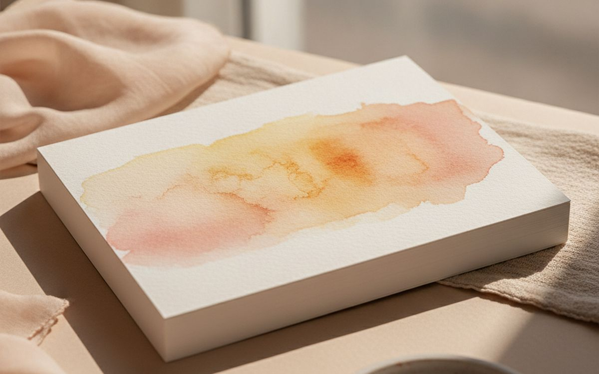
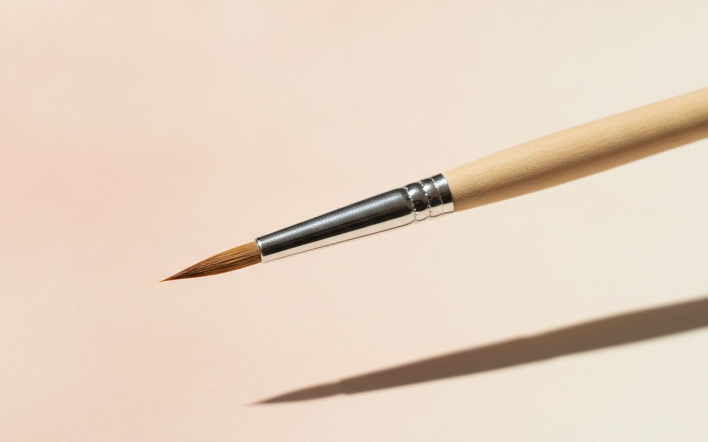
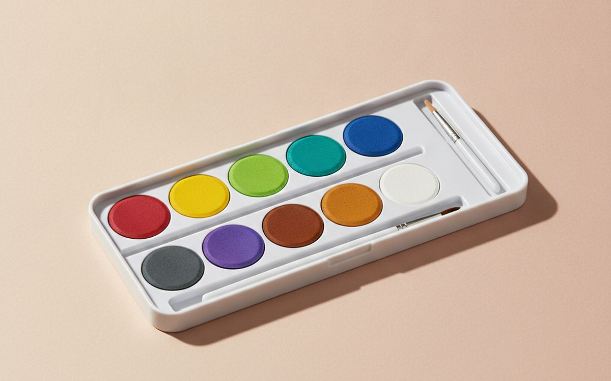
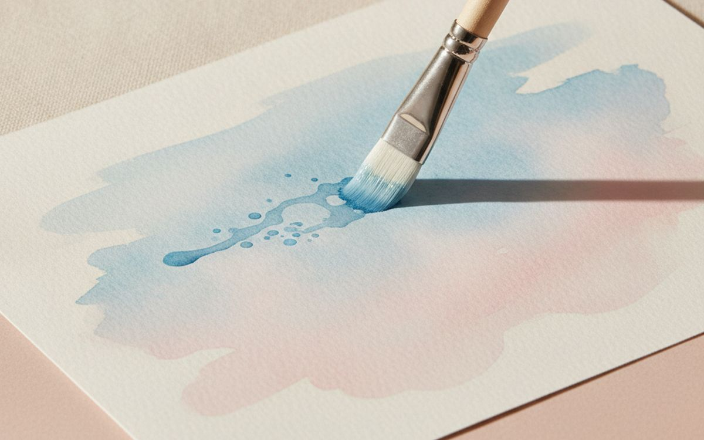
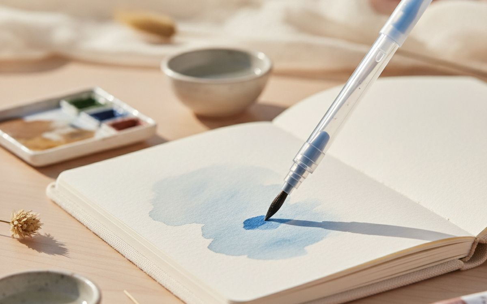
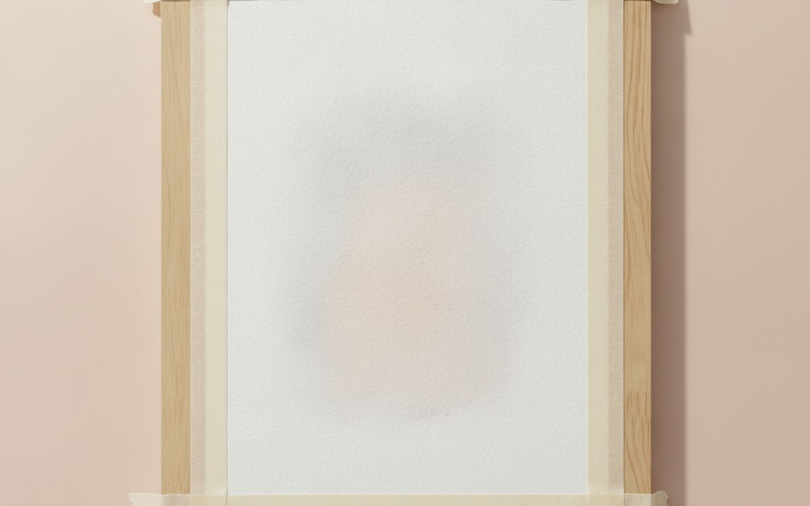
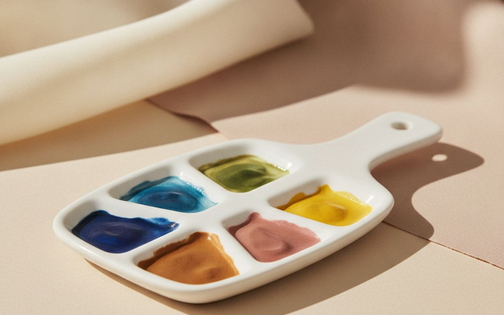
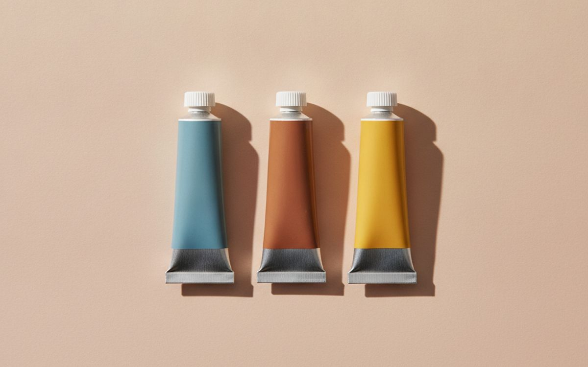
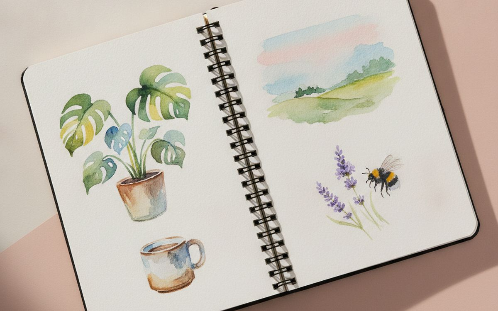
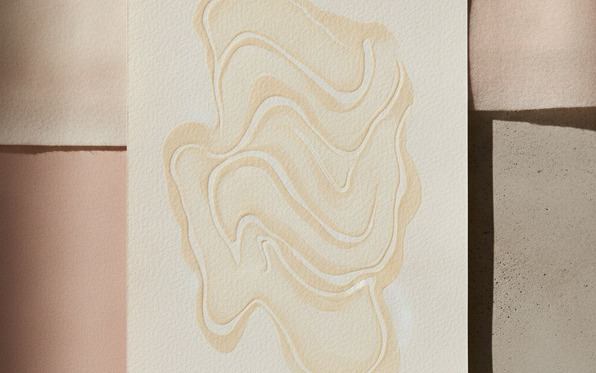

Beginners usually buy watercolour supplies backwards. They get a big set of cheap paints, a pad of thin paper and a bundle of stiff brushes. Then the paper buckles and pills, the colours turn to mud and the brushes will not hold a point. They decide they are bad at painting, when the materials were fighting them the whole time.
This list is ordered by how much each item improves your results. Paper first, then a few good brushes, then paint. A small, well-chosen kit beats a giant cheap one, and it costs about the same.
Prices below are approximate street prices at the time of writing and move around constantly, especially during sale events. Treat them as a rough band for budgeting, not a quote. Always check the live listing before you buy.
בקצרה
100% cotton watercolour paper, 140lb (300gsm)
The upgrade that changes everything
גילוי נאות. הקישורים בעמוד הזה הם קישורי שותפים. אם תקנו דרכם אנחנו עשויים להרוויח עמלה, בלי תוספת עלות לכם. זה לא משפיע על מה שנכנס לרשימה או על הסדר שלו.
איך בחרנו
These picks come from art teachers' recommendations, painting communities and long-run owner reports, cross-checked against current retail listings. We have not personally tested every item here. Art supplies are widely counterfeited on marketplaces, so buy branded paints and papers from official stores.
השוואה מהירה
המחירים הם הערכה נכון לזמן הכתיבה ומשתנים לעיתים קרובות.
הבחירות

01 · The upgrade that changes everything100% cotton watercolour paper, 140lb (300gsm)
Paper is where watercolour succeeds or fails. Cheap wood-pulp paper absorbs paint unevenly, buckles and pills when you rework it. Cotton paper holds water evenly, lets colours flow and blend, and survives lifting and layering. Arches, Baohong and Fabriano Artistico are well-known cotton papers. It costs more per sheet, so cut large sheets into quarters for practice. This single change does more for beginners than any other. The case for it: colours blend and flow properly, survives reworking, and makes techniques actually work. The trade-off is real: expensive per sheet and fakes exist; buy from official stores, so weigh that against how often it would actually get used.
$15-35על מה מוותרים: Expensive per sheet
בעד
- Colours blend and flow properly
- Survives reworking
- Makes techniques actually work
נגד
- Expensive per sheet
- Fakes exist; buy from official stores

02 · The one brush that does mostA size 8-10 round brush with a good point
A good round brush holds a lot of water and still makes a fine point, so one brush can paint a wash and a thin line. Synthetic brushes designed to mimic sable are affordable and good. Test the point: dip in water, flick, and it should snap back to a sharp tip. You can paint almost everything with this one brush. The case for it: does washes and details, holds plenty of water, and lasts for years with care. The trade-off is real: good brushes need care and never leave standing in water, so weigh that against how often it would actually get used.
$12-30על מה מוותרים: Good brushes need care
בעד
- Does washes and details
- Holds plenty of water
- Lasts for years with care
נגד
- Good brushes need care
- Never leave standing in water

03 · Starting paintA student-grade pan set with 12 colours
A small pan set from a known brand, such as Winsor and Newton Cotman, Sakura Koi or similar, gives good colour for a low price. Twelve colours is plenty; more colours encourage muddy mixing. Pans travel well and last a long time. The case for it: affordable decent colour, portable, and lasts a long time. The trade-off is real: less vivid than artist-grade paint and large cheap sets are mostly filler, so weigh that against how often it would actually get used. Priced around $15-35, it is easy to justify even if it only ends up getting occasional rather than daily use.
$15-35על מה מוותרים: Less vivid than artist-grade paint
בעד
- Affordable decent colour
- Portable
- Lasts a long time
נגד
- Less vivid than artist-grade paint
- Large cheap sets are mostly filler

04 · Skies and backgroundsA flat wash brush
A 1-inch flat brush lays down smooth washes for skies, water and backgrounds quickly. It also makes crisp edges for buildings. Synthetic is fine. The case for it: fast, even washes, crisp edges, and cheap. The trade-off is real: less useful for detail and cheap ones shed hairs, so weigh that against how often it would actually get used. At $10-20, it earns its place on this list without asking for a big up-front commitment either way. As with anything on this list, check the exact listing details and current price before adding it to a cart.
$10-20על מה מוותרים: Less useful for detail
בעד
- Fast, even washes
- Crisp edges
- Cheap
נגד
- Less useful for detail
- Cheap ones shed hairs

05 · Painting on the goA water brush pen
A water brush has a hollow barrel you fill with water, so there is no water cup to carry. It is perfect for sketching outdoors, travel and urban sketching. Pentel and Sakura make popular ones. A set with several tip sizes is cheap. The case for it: no water cup needed, great for travel, and cheap. The trade-off is real: harder to control water flow and tips wear out, so weigh that against how often it would actually get used. For $8-15, it is a small, low-risk addition to the list rather than a centrepiece purchase you need to think hard about.
$8-15על מה מוותרים: Harder to control water flow
בעד
- No water cup needed
- Great for travel
- Cheap
נגד
- Harder to control water flow
- Tips wear out

06 · Flat paper and clean edgesMasking tape
Taping paper to a board on all sides reduces buckling as it dries and leaves a clean white border. Use low-tack artist tape and peel slowly when the painting is fully dry, at an angle, to avoid tearing. The case for it: reduces buckling, clean borders, and cheap. The trade-off is real: can tear paper if removed too fast and regular tape can be too sticky, so weigh that against how often it would actually get used. Priced around $5-10, it is easy to justify even if it only ends up getting occasional rather than daily use.
$5-10על מה מוותרים: Can tear paper if removed too fast
בעד
- Reduces buckling
- Clean borders
- Cheap
נגד
- Can tear paper if removed too fast
- Regular tape can be too sticky

07 · Mixing coloursA porcelain or plastic mixing palette
A white palette with wells gives you space to mix colours and see them accurately. Porcelain lets paint bead less and cleans easily; plastic is cheaper and lighter. A white ceramic plate works too. The case for it: accurate colour mixing, easy to clean, and cheap. The trade-off is real: porcelain breaks and plastic stains over time, so weigh that against how often it would actually get used. At $8-20, it earns its place on this list without asking for a big up-front commitment either way. As with anything on this list, check the exact listing details and current price before adding it to a cart.
$8-20על מה מוותרים: Porcelain breaks
בעד
- Accurate colour mixing
- Easy to clean
- Cheap
נגד
- Porcelain breaks
- Plastic stains over time

08 · Brighter coloursA few artist-grade tubes
Once you are painting regularly, a few artist-grade colours add brightness and mix cleaner. A warm and cool version of each primary colour, six tubes, covers almost everything. Squeeze into an empty palette and let them dry into pans. The case for it: brighter, cleaner colour, last a long time, and mix more predictably. The trade-off is real: expensive per tube and some pigments are toxic; avoid ingesting, so weigh that against how often it would actually get used. For $10-15 each, it is a small, low-risk addition to the list rather than a centrepiece purchase you need to think hard about.
$10-15 eachעל מה מוותרים: Expensive per tube
בעד
- Brighter, cleaner colour
- Last a long time
- Mix more predictably
נגד
- Expensive per tube
- Some pigments are toxic; avoid ingesting

09 · Practice and journalingA travel sketchbook for watercolour
A sketchbook with watercolour-weight paper is where most improvement happens: small, quick daily paintings. It also becomes a lovely travel journal. Look for 140lb paper in a book that lies flat. The case for it: encourages daily practice, travel journal, and portable. The trade-off is real: pages buckle a bit and cotton sketchbooks are expensive, so weigh that against how often it would actually get used. Priced around $15-25, it is easy to justify even if it only ends up getting occasional rather than daily use. None of that makes it essential for everyone reading this, only worth knowing about if the description above matches how you actually use the space.
$15-25על מה מוותרים: Pages buckle a bit
בעד
- Encourages daily practice
- Travel journal
- Portable
נגד
- Pages buckle a bit
- Cotton sketchbooks are expensive

10 · Saving whitesMasking fluid
There is no white paint in traditional watercolour; the white is the paper. Masking fluid protects small areas, like highlights or snowflakes, so you can paint freely around them and rub it off later. Use an old brush; it ruins good ones. The case for it: keeps crisp whites, allows loose painting, and a little goes a long way. The trade-off is real: ruins good brushes and can tear cheap paper when removed, so weigh that against how often it would actually get used. At $10-15, it earns its place on this list without asking for a big up-front commitment either way.
$10-15על מה מוותרים: Ruins good brushes
בעד
- Keeps crisp whites
- Allows loose painting
- A little goes a long way
נגד
- Ruins good brushes
- Can tear cheap paper when removed
שאלות נפוצות
What watercolour supplies should a beginner buy first?
Cotton paper, one good round brush and a small student-grade paint set.
Why do my paintings look muddy?
Often cheap paper, too many layers, or mixing too many colours. Let layers dry fully and mix no more than two or three colours.
Pans or tubes?
Pans are easier and portable. Tubes give more paint for larger work.
Is cotton paper really worth it?
Yes. It is the biggest single improvement in watercolour.
הדילים של היום
ראו מה מוזל עכשיו.
דילים →← כל המדריכים
כשותפים של עליאקספרס אנחנו מרוויחים עמלה מרכישות מזכות. המחירים והזמינות נכונים לזמן הפרסום ועשויים להשתנות.